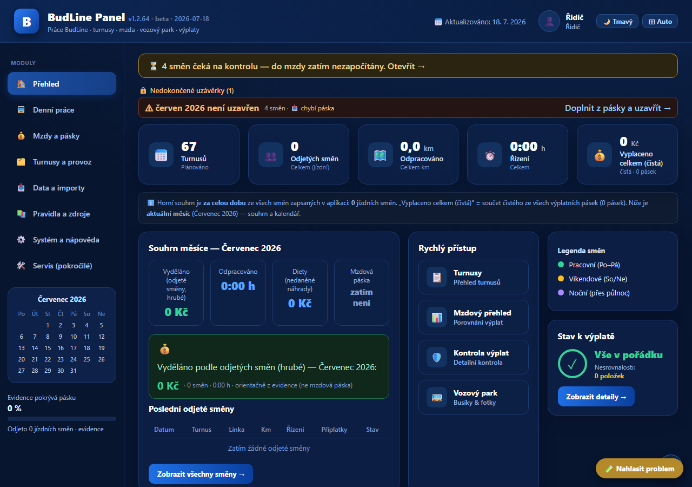
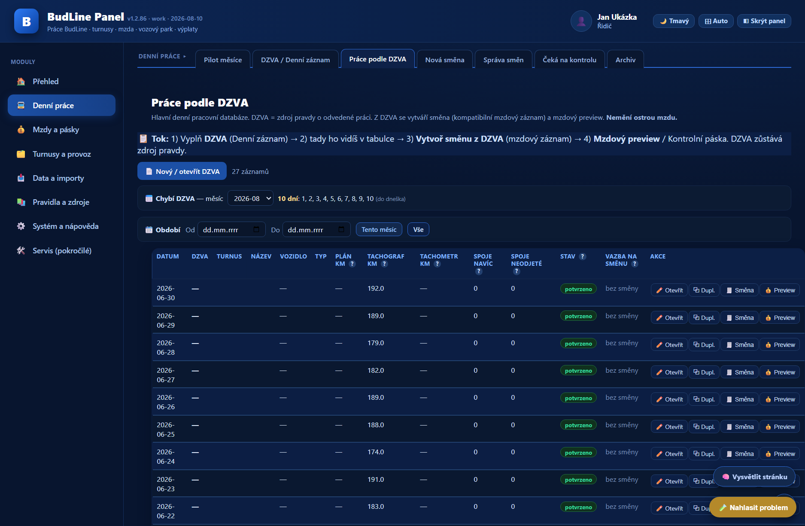
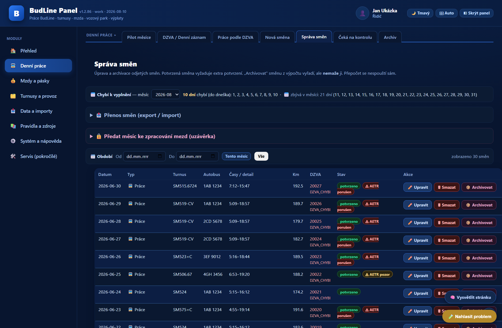
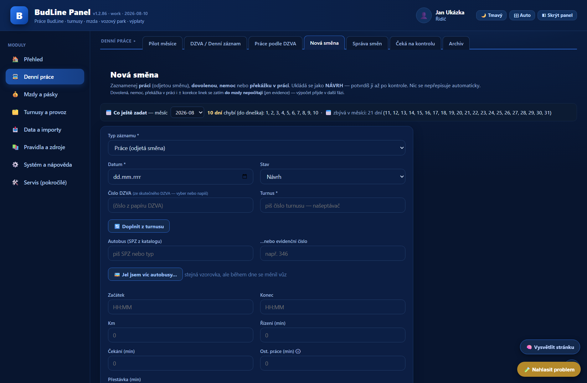
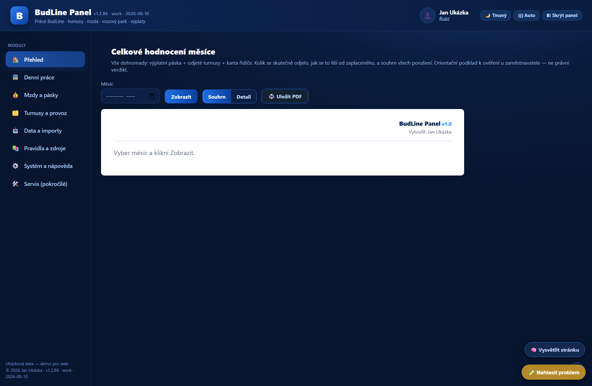
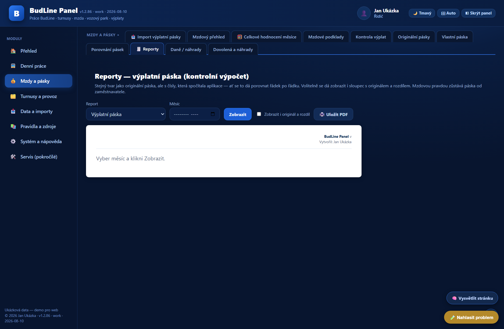
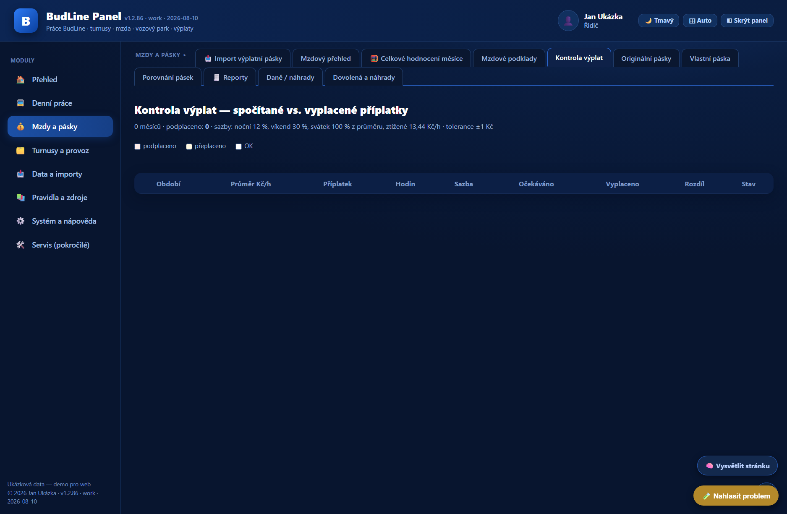
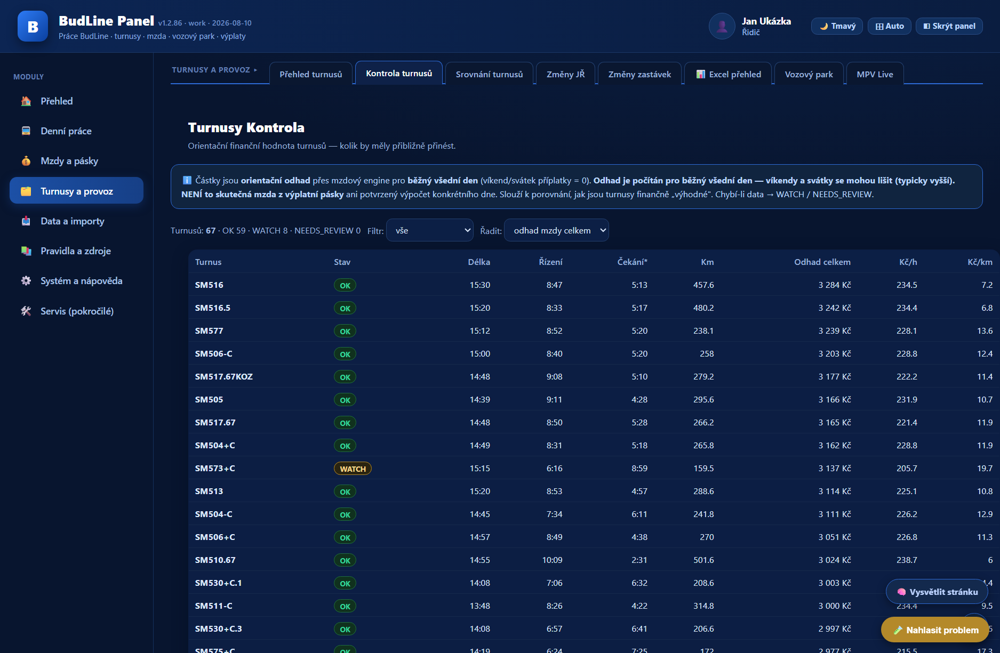
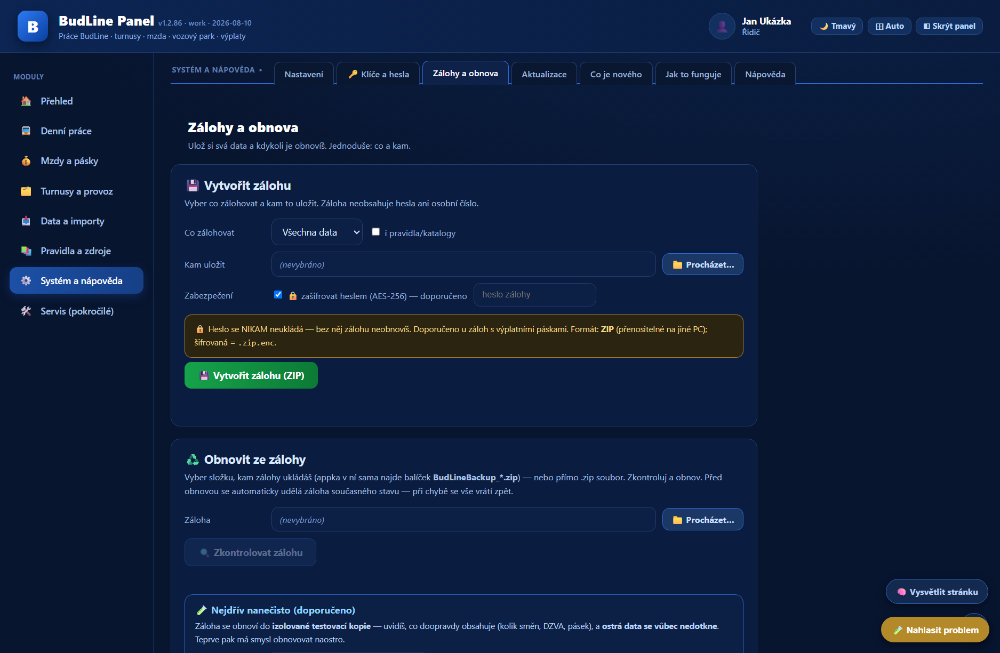
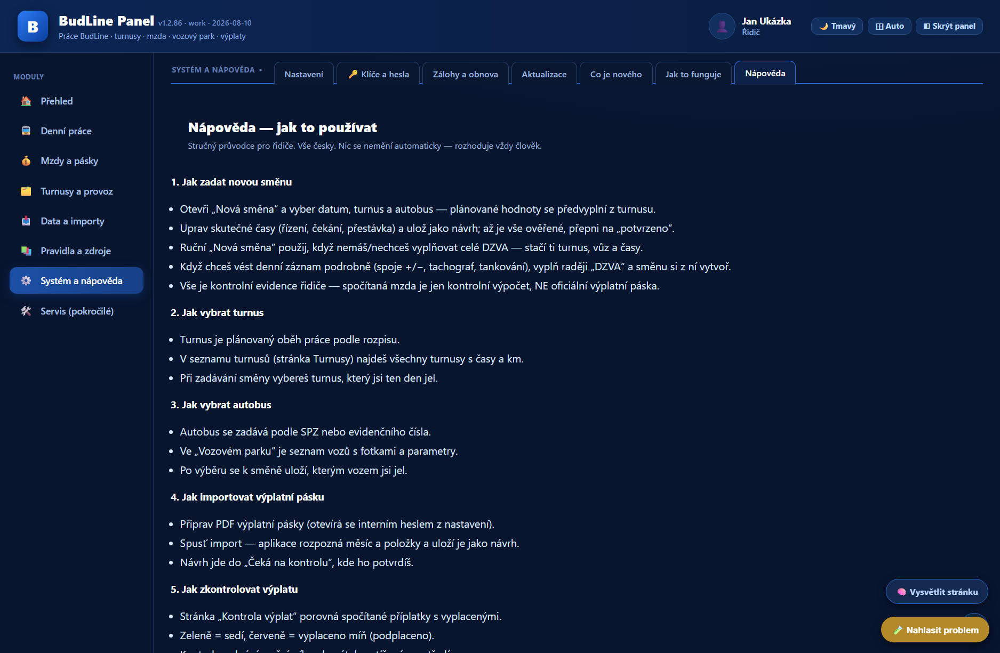

🚍BudLine Panel
Un'app per autisti di autobus che tiene sotto controllo turni, rotazioni e stipendio. Niente foglietti e calcoli a mente: registro i turni e l'app calcola quanto deve arrivare in busta paga — a fine mese verifico che torni tutto. Gira solo sul computer, senza cloud e senza account.
Python SQLite Windows macOS v1.2.93 BETA
Cosa fa
Perché esiste: i turni di un autista sono sparsi tra rotazioni, supplementi per weekend e festivi, e a fine mese arriva una busta paga difficile da controllare. BudLine è un pannello semplice: registro i turni (o li leggo dalla carta del conducente), l'app li somma secondo le regole e mostra quanto deve uscire. La usiamo in due — io e un collega di lavoro.
Registro turni e rotazioni: ogni turno ha data, orari e tipo; l'app controlla la correttezza dell'inserimento (formato HH:MM, niente numeri negativi) e compone il riepilogo mensile.
Documenti per la busta paga: dai turni registrati l'app calcola la base per lo stipendio secondo le regole impostate (ore, supplementi). A fine mese basta confrontare con la busta paga — se qualcosa non torna, si vede subito dove.
Lettura della carta del conducente: dalla versione 1.2.13 l'app legge i dati direttamente dalla carta a chip tramite un lettore — meno trascrizioni manuali.
Tutto in locale: i dati restano sul computer (SQLite). Gli aggiornamenti si installano da soli in background; l'upgrade non sovrascrive mai dati e impostazioni dell'utente.
Funzioni chiave
- Riepilogo mensile dei turni — i turni registrati confluiscono in un riepilogo con i totali di presenza.
- Calcolo della busta paga — secondo le regole (ore, supplementi); confronto di fine mese con il cedolino.
- Chiusura del mese e compilazione dal cedolino — la home mostra un mese non chiuso; alla chiusura, un pulsante compila le voci che non sono sul turno standard (premi carburante e ordinari, lavaggio, CNG) direttamente dal cedolino caricato.
- Editor dei turni nell'app — crea un turno in tabella o modifica uno esistente, import in blocco (HTML/XML/ZIP), autocompletamento fermate e campo veicolo (codice V, es. „autobus a 3 assi").
- Valutazione secondo la legge — per il singolo turno e per l’intero mese: il turno pianificato rispetta AETR e il D.G. 589/2006? Elenco delle violazioni giorno per giorno, versione completa e ridotta, stampa in PDF.
- Piano vs realtà dalla carta del conducente — accanto al piano del turno vedi ciò che la carta ha realmente registrato (guida, lavoro, riposo) e dove differisce; i riposi sono valutati in continuo oltre la mezzanotte e gli orari della carta sono convertiti da UTC all’ora locale.
- Valutazione mensile complessiva — busta paga, turni effettuati e carta del conducente in un’unica schermata: quanto si è realmente guidato, come corrisponde a quanto pagato e il riepilogo di tutte le violazioni.
- Controllo dei tempi di guida (AETR) — i turni che potrebbero violare le regole del trasporto stradale vengono segnalati per la verifica; lo stipendio non viene mai modificato.
- Premi e benefit nella busta paga di controllo — i premi dalla busta paga caricata (carburante, incassi, ordinari), la previdenza integrativa, il telefono e il lavaggio degli indumenti; il lordo di controllo torna alla corona.
- Ricalcolo dei mesi già chiusi dopo la correzione di un turno — l'app trova da sola i mesi chiusi interessati e propone il ricalcolo. Il turno non viene mai riscritto a ritroso: ogni giornata si calcola con la versione del turno valida a quella data.
- Selettore del mese e indicatore di lavoro in corso — nel riepilogo retributivo il mese si cambia con un menù a tendina o con le frecce; quando l'app calcola in background lo si vede in basso a destra.
- Riepilogo annuale delle festività — quali sono state guidate e quanto hanno fruttato in più, e quali sono cadute in un giorno di riposo del turno, dove non matura alcun diritto.
- Import dalla carta del conducente — dati dalla carta a chip via lettore (dalla v1.2.13).
- MPV Live / Esercizio — esercizio in tempo reale dei turni di Semily: corse in marcia, dettaglio corsa (ritardo, occupazione), mappa delle posizioni dei veicoli e ritardi istantanei (dalla v1.2.14, sola lettura).
- Controlli di inserimento — validazione di orari e valori, così un errore di battitura non finisce nello stipendio.
- Aggiornamento automatico silenzioso — le nuove versioni si installano da sole; configurazione e dati restano.
- Senza cloud — nessun account, nessun server, dati solo sul computer.
Come funziona nella pratica
Ogni mese l'autista riceve una busta paga con sopra un solo numero. Verificarlo significa ripercorrere i turni e sommare ore di guida, attese, maggiorazioni notturne e del fine settimana e le indennità di trasferta — secondo il contratto collettivo, non a occhio. BudLine Panel fa esattamente questo: tiene il registro di ciò che è stato guidato, calcola quanto dovrebbe arrivare e lo mette accanto a quanto è arrivato davvero.
1. Registrare la giornata
La giornata nasce da due fonti. Il turno dice che cosa era previsto — corse, orari, chilometri, pause. Il DZVA (registro giornaliero di esercizio del veicolo) è il foglio del capomovimento: numero del documento, autobus, letture del cronotachigrafo e del contachilometri. L'app unisce le due cose e calcola il resto, così a mano si inserisce solo ciò che si discosta dal piano.
- Cambio dell'autobus a metà giornata — basta indicare da quale linea si è passati all'altro mezzo. Orari e chilometri delle due tratte l'app li ricava dal turno e, se le letture dei contatori ci sono, usa il dato reale al posto del piano.
- Due turni in una giornata — se il capomovimento emette un nuovo DZVA per il pomeriggio, la giornata si divide in due turni. Il compenso si ripartisce in base al tempo di guida; l'indennità resta intera, perché la giornata di lavoro è stata una sola.
- Corse in più o non effettuate — vengono calcolate le differenze di tempo di guida, di tempo al lavoro e di chilometri; durata e distanza arrivano dall'orario ufficiale, niente viene stimato.
2. Il calcolo
Sopra il registro gira il calcolo retributivo secondo il contratto collettivo: tariffa base, quota di produttività, attese, condizioni disagiate, maggiorazioni notturne, festive e del fine settimana, indennità in base alla durata del turno. Il risultato si vede giorno per giorno e per l'intero mese.
- Riepilogo retributivo del mese — dettaglio per giornata: quante ore, quante di guida, quali maggiorazioni, quante corone. Il mese si cambia dal selettore in alto.
- Report — busta paga propria e foglio turni nello stesso formato del documento del datore di lavoro, per confrontarli riga per riga.
- Verifica della busta paga — voce per voce rispetto alla busta caricata, premi e benefit compresi; ciò che non torna salta subito all'occhio.
- Verifica dei turni — stima indicativa di quanto renderà un turno, prima ancora di guidarlo.
3. Controlli e numeri onesti
L'app non deve inventare numeri. Quando non può esserne certa lo dice, e preferisce non mostrare un valore piuttosto che mostrarne uno sbagliato.
- Un dato implausibile non viene usato — se la lettura del contachilometri produce 50 000 km in un turno, o molto più del previsto, l'app la tratta come un errore di battitura e resta sul piano. Non spaccia un refuso per una deviazione.
- Un campo vuoto dice perché — se il dato manca sul DZVA o se è compilata una sola delle due letture. Un contatore invertito (fine inferiore all'inizio) è segnato in rosso.
- La verità retributiva resta la busta paga del datore di lavoro — l'app serve al controllo, non sostituisce l'ufficio paghe, e lo scrive sui propri output.
- Chiusura del mese — una volta chiuso, i numeri vengono bloccati in uno snapshot e non si muovono più. Se in seguito emerge che un turno era diverso da una certa data, l'app propone il ricalcolo e ne registra il motivo.
4. I dati restano a casa
- Gira in locale su Windows (e su Mac), senza cloud, senza account, senza telemetria. I dati stanno sul computer.
- Backup con un solo pulsante, volendo cifrati con password. Il ripristino si può prima provare a vuoto in una copia isolata — si vede che cosa contiene il backup e i dati reali non vengono toccati.
- Gli aggiornamenti si scaricano e si installano da soli; dati e impostazioni restano.
- Le pagine si rigenerano da sole a ogni modifica dei dati — non c'è nulla da aggiornare a mano.
Che cosa l'app non fa
Non è un gestionale paghe e non sostituisce l'ufficio del personale. Non calcola altre persone, non invia nulla al datore di lavoro e non ha una versione web. È lo strumento di un autista per controllare il proprio stipendio — ed è scritta così.
Anteprime










Gli screenshot usano dati di esempio (anonimizzati) — le buste paga reali e i dati personali non vanno sul web.
Installazione (beta)
🔒 L'app non è scaricabile pubblicamente. Qui non troverai l'installer, di proposito — mando il link di persona a chi do l'applicazione. Il numero di versione in questa pagina resta: si compila da solo dalla stessa fonte da cui l'app installata prende gli aggiornamenti silenziosi.
🔒 L'installer è protetto da password — la condivido di persona; sul web non c'è e non ci sarà.
🍏 macOS: al primo avvio fai clic destro sull'app → Apri (non è firmata, è la nostra app). Se dice "danneggiato", esegui xattr -cr "/Applications/BudLine Panel.app" nel Terminale.
🛡️ Windows può mostrare un avviso SmartScreen (installer beta non firmato). Se conosci l'app e la aspetti da me, clicca "Ulteriori informazioni" → "Esegui comunque".
⚠️ Chiudi l'app in esecuzione prima di installare.
Stato
Versione 1.2.97 BETA (settembre 2026). Il numero esatto di versione viene letto automaticamente dal manifest delle release — la stessa fonte che l'app installata usa per gli aggiornamenti silenziosi. La usiamo attivamente in due; si sviluppa sulla base di buste paga reali. Beta = funziona, ma è ancora in rifinitura; l'installer non è firmato ed è protetto da password.
Lo storico dettagliato è nel .